Inertial Fusion Diagnostics — Quantitative Assessment of Published Experimental Measurements
Real experimental retrospective analysis. Version0.1.0; computational verification does not establish a new physical discovery.
Abstract and objective
Inventory the published experimental archive and characterize raw detector arrays and pixel-domain processing robustness. No implosion-performance or operating-parameter analysis.
Methods and all parameters are in the accompanying METHODOLOGY and manifest. Originals and transformed displays remain distinct. Units and unknown calibrations are explicit.
Verified quantitative findings
ICF-01 / OBSERVED
Verified experimental diagnostic inventory
Bounded ZIP path/type/size validation, hashes, original HDF4 layout inspection
{'x_range_px': 8.482993794463255, 'y_range_px': 27.493343077138547, 'method': 'All6declared background/fixedROI combinations; range is preprocessing sensitivity, not a confidence interval or physical shot-to-shot difference'}
{'x_range_px': 19.662304210247612, 'y_range_px': 31.186901151629513, 'method': 'All6declared background/fixedROI combinations; range is preprocessing sensitivity, not a confidence interval or physical shot-to-shot difference'}
{'x_range_px': 0.8656053439643756, 'y_range_px': 4.9670732604679415, 'method': 'All6declared background/fixedROI combinations; range is preprocessing sensitivity, not a confidence interval or physical shot-to-shot difference'}
{'x_range_px': 5.882454976262807, 'y_range_px': 19.39653326914288, 'method': 'All6declared background/fixedROI combinations; range is preprocessing sensitivity, not a confidence interval or physical shot-to-shot difference'}
{'x_range_px': 18.08158473962021, 'y_range_px': 37.72015718203966, 'method': 'All6declared background/fixedROI combinations; range is preprocessing sensitivity, not a confidence interval or physical shot-to-shot difference'}
{'x_range_px': 0.8047038626384619, 'y_range_px': 4.762418254523141, 'method': 'All6declared background/fixedROI combinations; range is preprocessing sensitivity, not a confidence interval or physical shot-to-shot difference'}
{'x_range_px': 4.827974601995265, 'y_range_px': 8.301585077136565, 'method': 'All6declared background/fixedROI combinations; range is preprocessing sensitivity, not a confidence interval or physical shot-to-shot difference'}
STFC OMEAG_SAI-23A, shot 109090: original raw detector array displayed with explicit linear P01–P99 scaling and stride; no physical conversion. CC BY4.0; source authors in manifest.
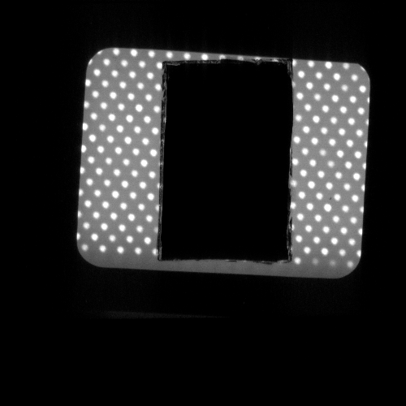
Shot 109090: display-only positive raw-minus-original-border-median, clipped at transformed P99. Detector coordinates and explicit stride; source original unchanged. STFC CC BY4.0.
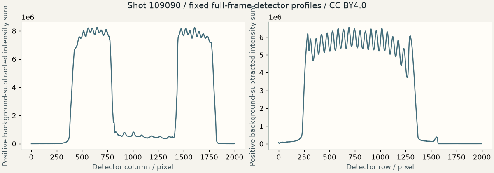
Generic detector-pixel profiles after declared border-median subtraction; not plasma dimensions, yield or implosion performance.
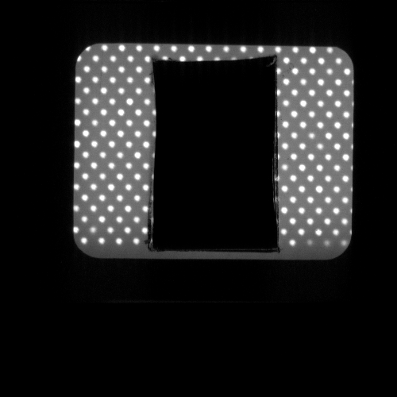
STFC OMEAG_SAI-23A, shot 109092: original raw detector array displayed with explicit linear P01–P99 scaling and stride; no physical conversion. CC BY4.0; source authors in manifest.Shot 109092: display-only positive raw-minus-original-border-median, clipped at transformed P99. Detector coordinates and explicit stride; source original unchanged. STFC CC BY4.0.
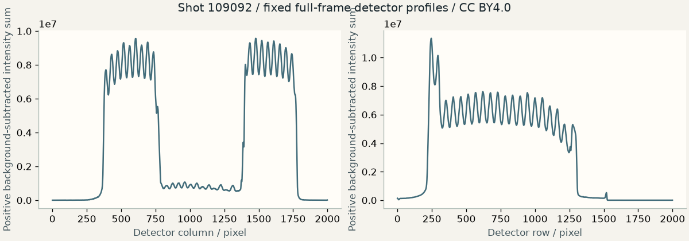
Generic detector-pixel profiles after declared border-median subtraction; not plasma dimensions, yield or implosion performance.STFC OMEAG_SAI-23A, shot 109093: original raw detector array displayed with explicit linear P01–P99 scaling and stride; no physical conversion. CC BY4.0; source authors in manifest.
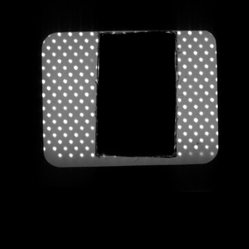
Shot 109093: display-only positive raw-minus-original-border-median, clipped at transformed P99. Detector coordinates and explicit stride; source original unchanged. STFC CC BY4.0.
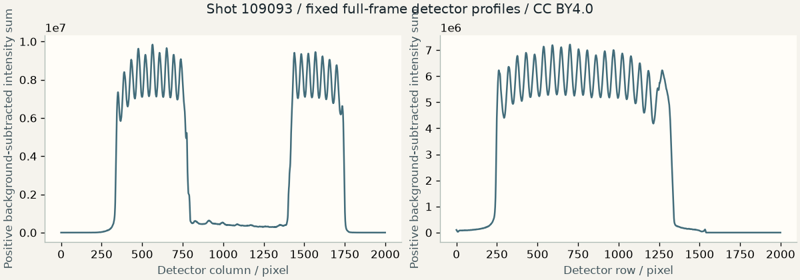
Generic detector-pixel profiles after declared border-median subtraction; not plasma dimensions, yield or implosion performance.
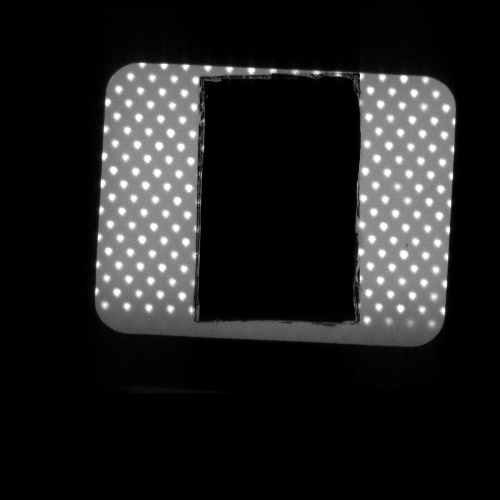
STFC OMEAG_SAI-23A, shot 109094: original raw detector array displayed with explicit linear P01–P99 scaling and stride; no physical conversion. CC BY4.0; source authors in manifest.Shot 109094: display-only positive raw-minus-original-border-median, clipped at transformed P99. Detector coordinates and explicit stride; source original unchanged. STFC CC BY4.0.
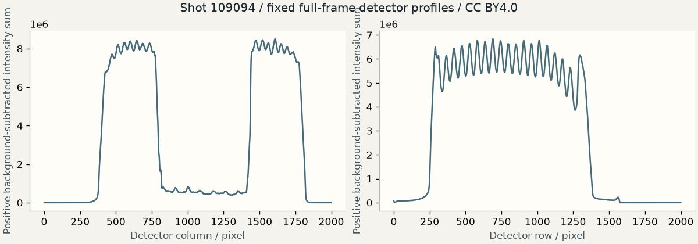
Generic detector-pixel profiles after declared border-median subtraction; not plasma dimensions, yield or implosion performance.
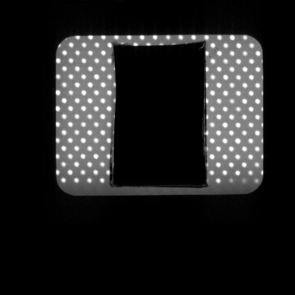
STFC OMEAG_SAI-23A, shot 109098: original raw detector array displayed with explicit linear P01–P99 scaling and stride; no physical conversion. CC BY4.0; source authors in manifest.Shot 109098: display-only positive raw-minus-original-border-median, clipped at transformed P99. Detector coordinates and explicit stride; source original unchanged. STFC CC BY4.0.
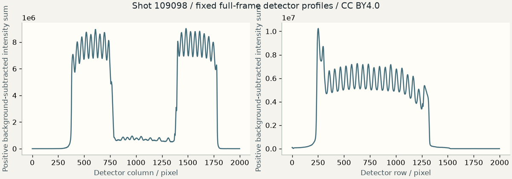
Generic detector-pixel profiles after declared border-median subtraction; not plasma dimensions, yield or implosion performance.STFC OMEAG_SAI-23A, shot 109099: original raw detector array displayed with explicit linear P01–P99 scaling and stride; no physical conversion. CC BY4.0; source authors in manifest.Shot 109099: display-only positive raw-minus-original-border-median, clipped at transformed P99. Detector coordinates and explicit stride; source original unchanged. STFC CC BY4.0.
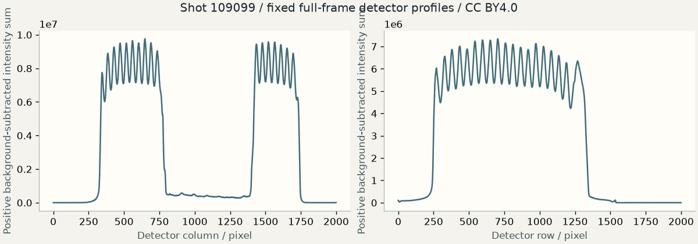
Generic detector-pixel profiles after declared border-median subtraction; not plasma dimensions, yield or implosion performance.
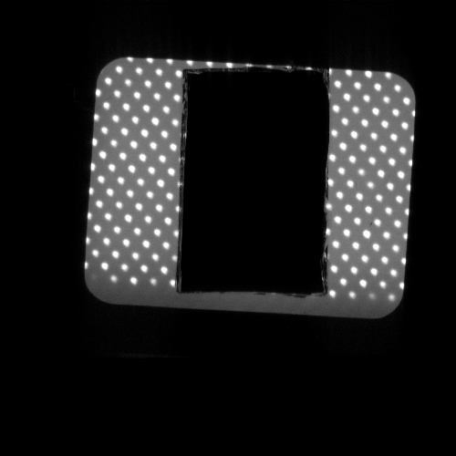
STFC OMEAG_SAI-23A, shot 109103: original raw detector array displayed with explicit linear P01–P99 scaling and stride; no physical conversion. CC BY4.0; source authors in manifest.Shot 109103: display-only positive raw-minus-original-border-median, clipped at transformed P99. Detector coordinates and explicit stride; source original unchanged. STFC CC BY4.0.
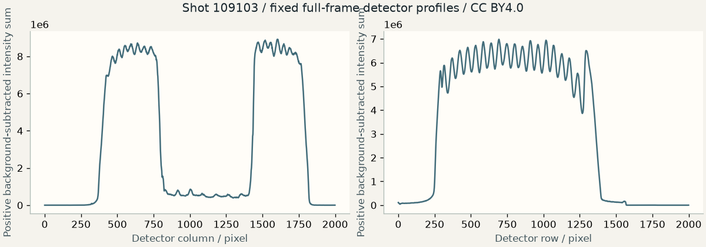
Generic detector-pixel profiles after declared border-median subtraction; not plasma dimensions, yield or implosion performance.
Uncertainty, discussion and limitations
Instrument detector values and pixel coordinates only; no conversion to physical plasma dimensions or radiometric quantities.
Processed PSL images, neutron/proton performance diagnostics, target specifications and operating parameters are not analyzed.
Raw gel and source-processed PSL arrays remain distinct; originals remain unchanged.
No absolute yield, temperature, areal density, ignition, implosion model or performance optimization inferred.
ICF03 is methodological robustness of the same measurements, explicitly replacing cross-implosion comparison.
Sensor full scale, calibration errors and systematic uncertainties remain unknown.
Validation and conclusions
Algorithm controls, independent numerical checks and exact acquired-source replay accompany publication. These are reproducible descriptions of selected real data, not a new plasma law, named instability, ignition result or validated prediction.
Original software: Apache2.0. Data-derived scientific report, plots and selected measurements: CC-BY-4.0. Source attribution and modifications: acquired source arrays, unit normalization, explicit selections, deterministic statistics and labeled display scaling by Mattoccia Labs; no source endorsement.
# Reproduce FPE-002
From the original source release, on qualified macOS Apple Silicon/Python3.12:
```sh
python3.12 scripts/setup_fusion.py
.venv-fpre/bin/python -m fusion.cli run --experiment FPE-002 --data .local/fusion
.venv-fpre/bin/python -m fusion.cli reproduce --experiment FPE-002 --job JOB_ID --data .local/fusion
```
Initial run acquires official data explicitly. Keep source responses and manifest. Reproduce rehashes original bytes and recomputes without network; missing or modified source objects cause a visible failure. Upstream may replace Zarr objects at the same URL, so fresh acquisition is not automatically the original version. A qualified selected-input public replay is separately labeled; it cannot replace full raw-source validation. No model, apparatus access or cloud is required. Other operating systems are not qualified.